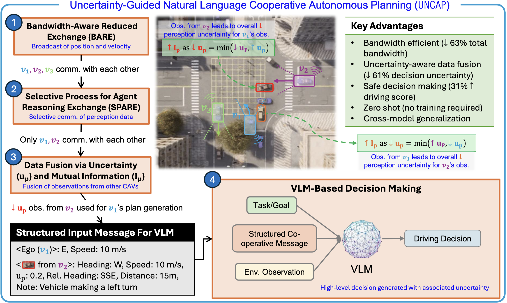
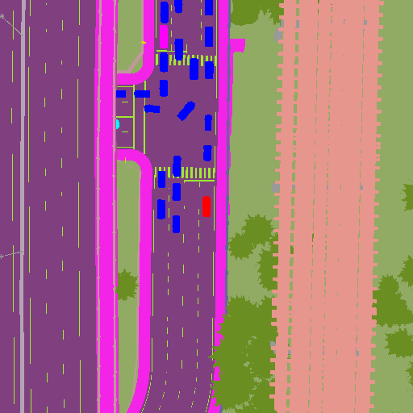
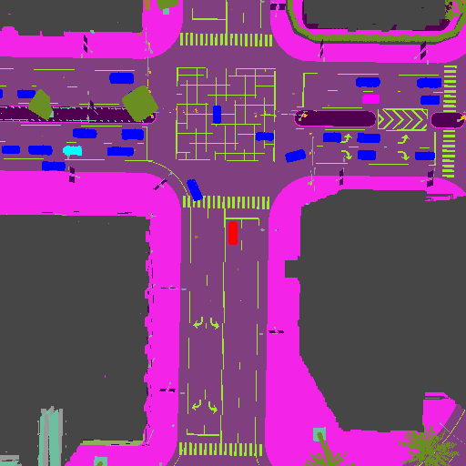
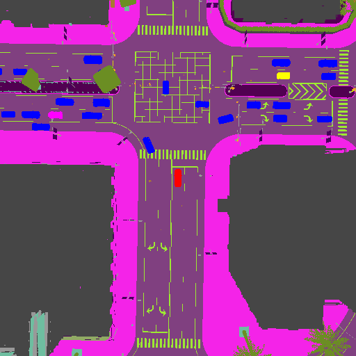
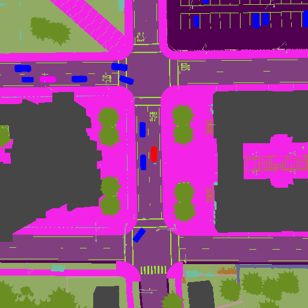
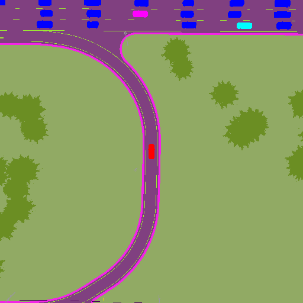
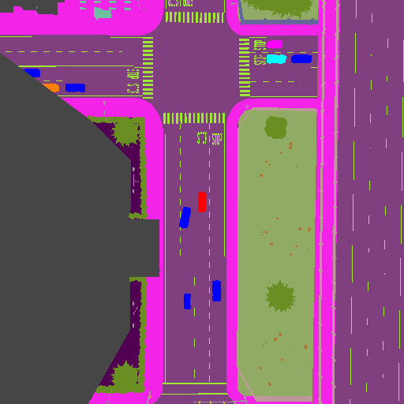
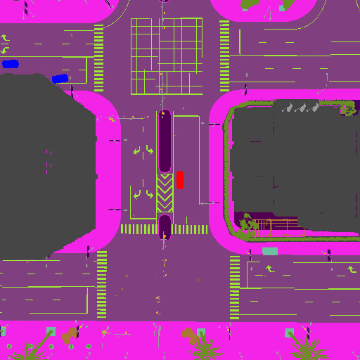
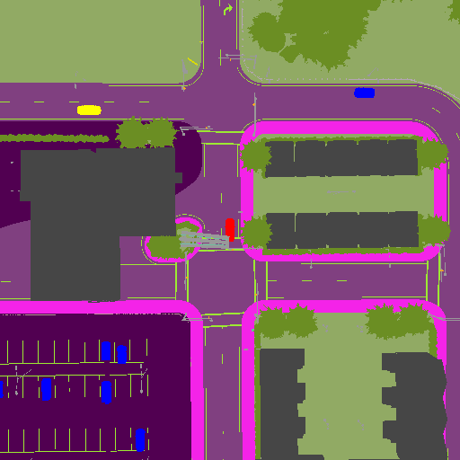
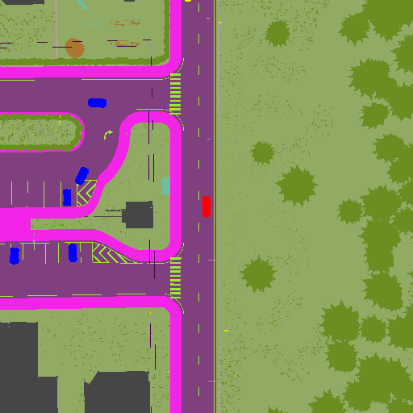

Scene Examples
Scene 1

Scene 2

Scene 3

Scene 4

Safe large-scale coordination of multiple cooperative connected autonomous vehicles (CAVs) hinges on communication that is both efficient and interpretable. Existing approaches either rely on transmitting high-bandwidth raw sensor data streams or neglect perception and planning uncertainties inherent in shared data, resulting in systems that are neither scalable nor safe.
To address these limitations, we propose Uncertainty-Guided Natural Language Cooperative Autonomous Planning (UNCAP), a vision-language model-based planning approach that enables CAVs to communicate via lightweight natural language messages while explicitly accounting for perception uncertainty in decision-making. UNCAP features a two-stage communication protocol: (i) an ego CAV first identifies the subset of vehicles most relevant for information exchange, and (ii) the selected CAVs then transmit messages that quantitatively express their perception uncertainty. By selectively fusing messages that maximize mutual information, this strategy allows the ego vehicle to integrate only the most relevant signals into its decision-making, improving both the scalability and reliability of cooperative planning.
Experiments across diverse driving scenarios show a 63% reduction in communication bandwidth with a 31% increase in driving safety score, a 61% reduction in decision uncertainty, and a four-fold increase in collision distance margin during near-miss events.

Overview of UNCAP. To minimize bandwidth, vehicles first engage in BARE and share essential state information. SPARE then enables selective communication among relevant agents to focus on critical interactions. Observations are fused based on their contribution to reducing perception uncertainty, prioritizing information that maximizes mutual information for the ego vehicle. The fused messages are then put in a structured format and used by a VLM to produce driving decisions with an associated decision uncertainty score for safe and interpretable planning.











@inproceedings{bhatt2025uncap,
title={{UNCAP}: Uncertainty-Guided Planning Using Natural Language Communication for Cooperative Autonomous Vehicles},
author={Neel P. Bhatt and Po-han Li and Kushagra Gupta and Rohan Siva and Daniel Milan and Alexander Todd Hogue and Sandeep P. Chinchali and David Fridovich-Keil and Zhangyang Wang and ufuk topcu},
booktitle={The 25th International Conference on Autonomous Agents and Multi-Agent Systems},
year={2025},
url={https://openreview.net/forum?id=aYlKa5ppLh}
}